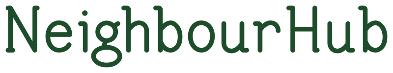

Spring Garbage Clean Up 3.0 - Sunday April 26, 11am!
We need to continue with the garbage clean up since it is a HUGE JOB! Bring some gloves and a garbage bag and help make the George Bissett Green Space beautiful again.
Garbage supplies available for free from Alderney Library.
Weekly meet-ups at George Bissett Playground through Spring, Summer and Fall when weather permits.
Date: April 12, 2026
Participants: Nine
Summary: We cleaned up the side and back of the school but there is still much more to do!
Project circle:
Date: March 29, 2026
Participants: Seven
Summary: We cleaned up the front of the playground but there is still much more to do!
Project circle ideas:
Date: March 22, 2026
Participants: Three
Summary: We walked the greenspace and made a list of possible projects.
Something precious has gone missing: in-person, community connection.
Social media, busy schedules, and paid programs connect us by interest but disconnect us by address. We find our people online while the person next door stays a stranger. And when disagreements arise, screens make it easy to dismiss, demean, or simply disappear—eroding the slow, messy work of learning to get along with people who see things differently. NeighbourHub is a grassroots invitation to move forward together, relearning how to work side by side and create something meaningful.
Gather on a patch of shared green. Tend the soil. Pass the tools. Let conversations go deeper than hello. Here, all generations—newcomers and longtimers alike—have a place.
If you're ready to create something real together, the gate's open.